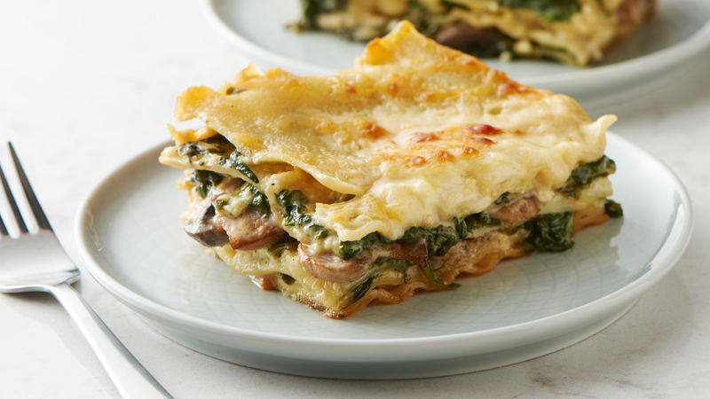

Spinich Lasagna

Description
This vegitarian lasagna is a favorite of my wife. she loves this dish, especially in fall
she preferes a nice white bechamel instead of a red marinara.
read on below to find out more.
Ingredients
- Lasagna noodles
- fresh spinish (1 large bag)
- mozarella cheese
- bechamel
- Potatoe (cooked)
- italian seasoning
Steps
- pre-heat oven to 350 degrees
- pre boil the lasagna noodles in large pot.
- cook off the water from the spinish. add italian seasoning.
- lay down layers of noodles, followed by potatoe, spinich, bechamel, and cheese.
- cook in an oven at 350 degrees for 45 minutes